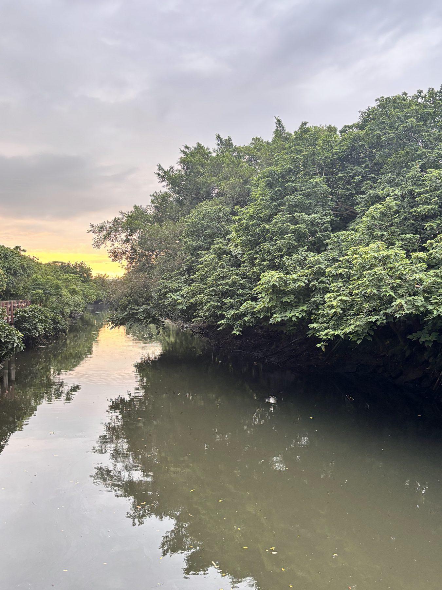
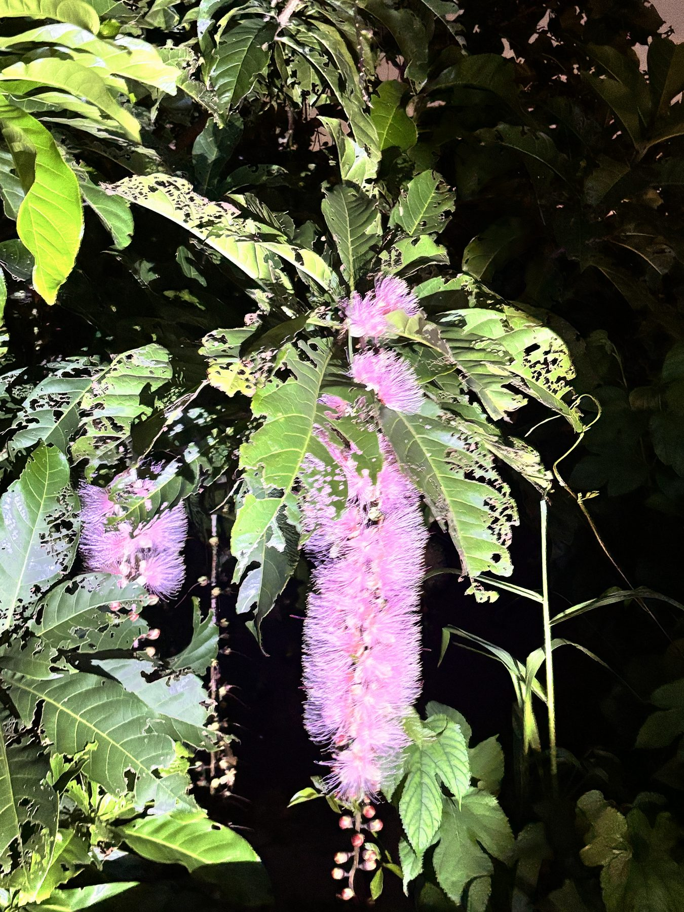
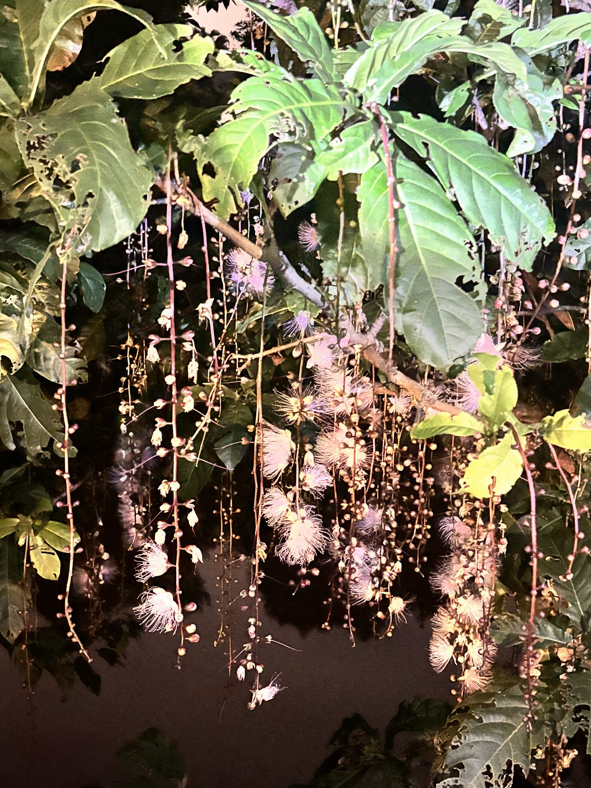

一・2023五分港溪
如水般流著，如水般逝去，生而為人，這就是人，你說。
成為一條河，隨自然變遷，流著，逝去，這就是河。
自然生滅，何須牽念？需要感情，就需要收拾。你笑談如常。
但是，生而為人，我想得很多，不解的很多，迷茫得更多。我需要隨著這條河，一次次地追索，找回我，也找回它，那些最初的模樣。
拼湊出我生而為人，這就是我的模樣。
第一次走訪五分港溪，是2023年。
那是天與地唯一的連結。

原始河岸與綠意無心的野性風景，恣意生長的水草，在一望無際的水文間恣意流動著，完全無視身處台北盆地該有的規律與節制。傾身靠近，卻又令人無法相信，臭氣污濁的河水也是它的生命。
難忘當時與這條河心靈相通的情懷。那自然而然流淌進我心底的，是一個文學創作者對一條美麗野性的溪流，深深的同情，不捨，還有，更多的是好奇。
除了好奇這條河，亦好奇自己究竟為何持有這樣易感的心靈？
我一直是破碎的。
我相信這條河也是。
即使現在擁有世人的名，卻有著不同的稱呼。不知道哪一個才是真正的它，真正的我。
那些破碎的，斷裂的，是的，你會說，那都是我，都是這條河。
不管你喚它雙溪、舊雙溪、五分港、五分港溪，在我眼裡，它就是眼底這條美麗而哀愁的溪水。地理空間無法定義它，真正的它，必須回溯時間，向時間一一呼告它。
在還沒能隨著我一段一段追索前，這條河都只是他人眼中、地圖套疊及歷史事件裡的水文地理。隨著人類的足跡，一次次破碎的倒影令人不寒而慄。
溯游人類歷史裡的河，沒有一刻是靜靜的流，坦露其間，事易時移，沒有人能斷言這些河最初的模樣、命定的走向，與真正的價值。這究竟是一條乾淨的河，還是污穢的河，是文化起源的河還是全然無用的河，是美麗是哀愁，河面反覆絮叼的波紋亦是無法斷言的。
對於這條河的身世，亦是無法一一坦露的，如果沒能溯源時間，回到源頭，是無法拼湊它完整的模樣。
對於自己的身世，亦是不需要細細坦露。
盡心盡力的在自己的生活裡梳理心事，是私小說或私散文的模式，那是一種書寫的方式，也是一種對待自己與世界的關係。我總是喜歡誤讀，喜歡人們也誤讀，讀成另一種風景，而不是只一個我所擁有的生活，以及我的生活形塑的世界。
這也是造成我不習慣詳細說明細節，不諳於成為聊天群體裡侃侃而談的那個人。安靜聆聽不愛發言的那個人總是我，我在自己的世界裡幻化成各種魔怪各種模樣，我唯一訴說這些細節的方式就是詩就是意象，那些充滿意象的生活，每天在我腦子裡自動對位，匯聚成河。
河，從來不是安靜的。
從來也只是一滴水，不再重現昔日回憶的一滴水。

我實在不擅於撥開一層又一層的皺褶，撥開，洗去污穢，然後再撥開洗去污穢，洗去連豬肚自己都不認識的豬肚。
但總是要面對異己，各種不得不變形或迷途的自己。
愛吃豬肚還是可以自己動手。既然洗得不像豬肚，梳理成另一鍋有豬肚味沒豬肚樣的佳餚也是妙。
認不出是豬肚的美味，吃起來卻是別有滋味。
那曾經留在時間軸的記憶，一滴水，一滴、一滴水，需要透過這條河，匯聚成河的模樣，成為世人可以指稱的河。
二・1896五角金魚藻
那天在台北盆地擁擠匆忙的人群縫隙間，跳出一段日本植物學家的文字。牧野富太郎（T. Makino），在1896年（明治29年）短暫來台，停留兩個月。這兩個月的植物採集與研究，留住了永遠不再出現的時間。
從1896年開始，一次次的追索，我想拼湊，一條河的完整模樣，也循蹤完整的自己。
1896年的台北盆地，正處於一個歷史巨變的轉折點。
那一年，清朝在台灣的統治剛剛畫下句點，日本進駐台灣邁入第二年。人心惶惶的，不只是每天升起的太陽換了更陌生的名字，歷史敘事的主角也還來不及整理該從何說起。唯一不變的，是那些任憑晨昏逝去，依然冷眼千秋的草木蟲魚，叫得出名和叫不出名的，依然生生不息。
1896年十月，牧野富太郎從日本輾轉來台，想要隨植物的蹤跡進一步暸解這一處陌生的南方島嶼。
雙腳所觸及的土地，就是牧野富太郎初識的沃土。
1896年，東京帝國大學派遣了第一批「台灣學術探險隊」來台進行自然與人文調查。當時34歲，擔任助手的牧野富太郎便是成員之一。
牧野富太郎從基隆上岸，在兩個月的時間內，靠著徒步走訪了台北、淡水、新竹、嘉義，一路南下到高雄鳳山，甚至還遠赴澎湖。這趟艱辛的旅程中（當時甚至需要隨身攜帶手槍防身），他總共採集了 4000 多份植物標本，並記錄了 1000 多種植物，為台灣植物學的近代分類奠定了基礎。
1896・牧野富太郎在台灣
1896年的牧野富太郎雙眼看到了什麼，我不得而知。但是從他悉心留下來的植物標本，我彷彿能拼湊出一些1896年的大地紋理，那些來自他採集到的標本。
尤其是採自臺北盆地的五角金魚藻（Ceratophyllum oryzetorum）標本，是林業試驗所植物標本館典藏採自臺灣地區最古老的植物模式標本。
但現今台北盆地已不見這種水草的蹤跡。
在生物分類學上，植物必須有拉丁文學名才能獲得國際認可。牧野富太郎為許多台灣在地植物取得了國際身分，其中最著名的有兩個：
世上沒有名為雜草的植物。牧野富太郎
牧野富太郎最廣為流傳的名言就是：「世上沒有名為雜草的植物」，這也是我在困惑的台北盆地縫隙間看得的一段話。他一生收集了約 40 萬件標本，為 1500 種以上的新物種命名。這雙對每一株在地植物都抱持平視、珍惜與敬意的眼睛，深刻影響了後來在台灣進行生態調查與自然書寫的學者與創作者。
當時的台北盆地，與今日我所熟知的鋼筋水泥都市叢林截然不同。那依然維持著清代中晚期以來的空間格局，是一處野性風景與人文初履的巨型農村盆地。大河縱橫、水網綿延、稻浪密織、漢原互動，微妙的干涉與融合。在此新舊政權交替的縫隙間，整座盆地正經歷著空間、政治與生態地景的劇烈激盪。

五角金魚藻，只是1896年諸多水域裡不起眼的原生植物，是一種生長在水中的沉水性植物。
當時的五角金魚藻，應該和我登山健行時腳邊的咸豐草一樣隨處可見。1896年，牧野富太郎來到台北盆地，沿著野性河岸，蹲下身子，以好奇之眼，在漫生綿延的水域中，採集到這株五角金魚藻。
這份標本至今仍被完好地保存著，默默見證著台北水系與生態的變遷。在19世紀末，台北盆地仍有許多未經大規模人為開發的自然水系、野溪與埤塘，相信這類水生植物在當時是極為常見的。
然而，隨著台北盆地逐漸高度開發，河川環境與都市化默默在時間裡變遷，這株曾被牧野富太郎親手採集的水草，已經有一百多年的時間，至今未曾在台北的自然水域中發現它的蹤跡了。現在的我，只能憑藉1896年的這份標本，想像百年前台北溪流與濕地的原始生態樣貌。
三・2026沒有一株草是雜草
這也是牧野富太郎所言：「沒有一株草是雜草」的最佳註腳。比起愛玉子或台灣桂竹這些具有高度經濟價值的植物，五角金魚藻在多數人眼中，可能只是一條普通溪流裡尋常的「水草」甚至「雜草」。但正是因為牧野富太郎那份平視萬物、細心記錄的態度，讓這株生長在水畔的平凡植物，成了1896年見證台北水文生態史最古老，也是最珍貴的科學證據。
2026年的五分港溪，許多人還不認識它，更遑論該如何陳述它的價值。最近，愈來愈多的論述或報導，來自它位於地位逐漸顯著的「北士科」，彷彿喚起大家對它的某些關注。但關注的焦點仍然是與它相鄰的「權貴近鄰」，關乎開發價值與河川存廢是當然的話題。
五分港溪在台北人的眼裡，有別於景美溪、新店溪、基隆河或是淡水河，一直是株不起眼的「雜草」，那也是來自人類本位主義的標籤。「每一株草都有它來到這世上的理由。」牧野富太郎的五角金魚藻，這株水澤間的小草，如今成為台灣的第一份珍貴植物模式標本，印記著1896年的水域台北。
這一株水草，與一棵深山裡的參天神木，對牧野富太郎而言，在生物學上的價值是完全等同的。


在自然界中，植物的生長並沒有貴賤或對錯之分。「雜草」這個詞彙，完全是人類基於自身利益而創造出來的功利概念，用來指稱那些生長在人類不需要、或妨礙人類農作與活動地方的植物。對牧野富太郎而言，若拋開人類的本位眼光，大自然中根本不存在「雜草」這個物種，每一株植物都有其存在於地球上的自然正當性。一種去人類中心化的現代生態觀，是牧野富太郎想要表達的。他希望能放下人類的傲慢與偏見，以科學的嚴謹和對生命的溫柔，去重新看待周遭那些平凡、微小卻充滿韌性的自然萬物。
在學術界普遍重視實用科學、追求農業與林業經濟利益、傾向研究有高經濟價值的作物或高大林木，文學界追求暢銷排行榜與巧立偶像的時代，一株雜草，一條斷了頭尾的五分港溪，到底有什麼價值。牧野富太郎的畢生志業就是為植物尋找名字，然後為它們建立身分，願意靜靜的趴在泥土上，用放大鏡凝視那些無名的生命，身為一輩子都在野外採集的分類學家。從他的眼裡，我彷彿也看著那些即便是路邊最不起眼的小草，都有著歷經千萬年演化而來的獨特構造、繁衍方式與生命史。
只要仔細觀察，每一株草都是獨立的物種，都有屬於自己的學名與俗名。如果我要用一句粗暴的「雜草」來概括它們，就等於抹煞了這些物種的獨特性。當認識了它的名字與特徵，它就不再是面目模糊的雜草，而是一個具體的生命。
1896年的台北盆地，一株雜草，牧野富太郎在南國的水澤間，究竟看到了什麼？
一個植物學家的心，生活在優美的傳統白壁建築和深厚的釀酒產業聞名的寧靜小鎮。是豐富的自然環境與清澈的水系，孕育了牧野富太郎對植物的熱愛嗎？深刻體會到「沒有一株草是雜草」的哲理是怎麼來的？是百年前佐川町的田野與溪畔，讓牧野富太郎萌生這份對萬物最初的平視與敬意嗎？

群山環繞間，一條溪澗汩汩而來，從內雙溪、外雙溪、舊雙溪河道，到五分港溪，流入基隆河，終究匯聚成為淡水河流域。台北盆地1896年前後形成的水系與人文聚落，到底和2026年的北士科有什麼加乘的價值？
五分港溪，2023年，第一次流入心底深處的這條河，好奇自己究竟為何依然持有如此易感的心靈，又好奇自己如何看待這條河。
終究匯聚在一起，
成為一條河。
非常感謝林試所植物標本館協助拍攝，及李承翰、高書婷指導